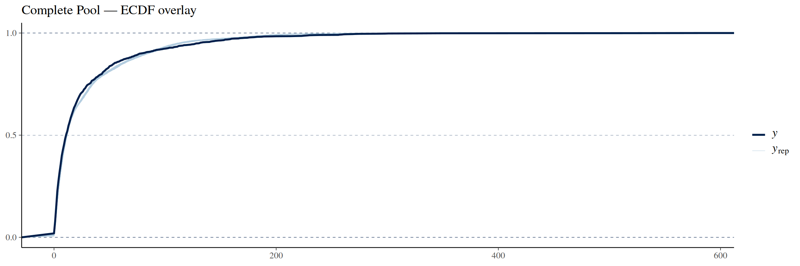
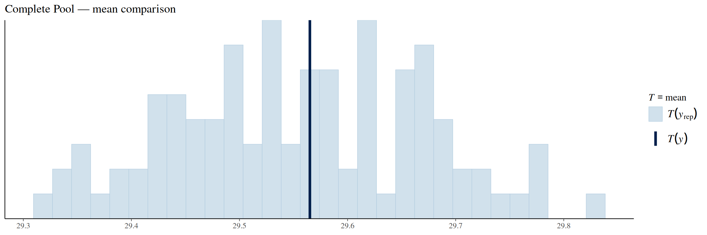
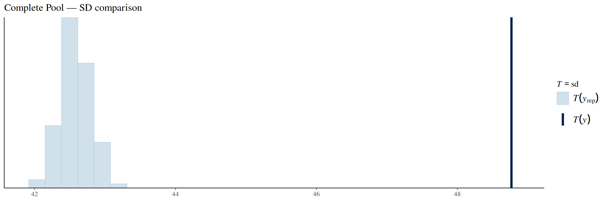
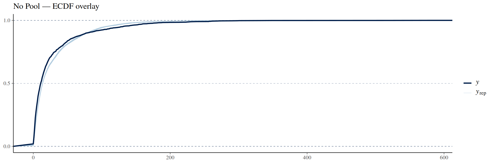
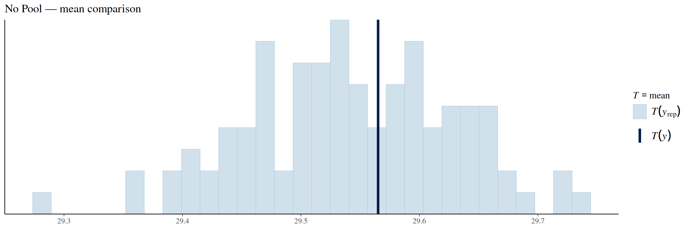
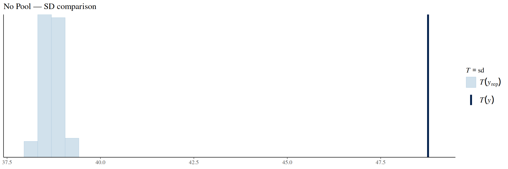
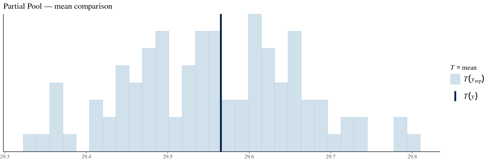
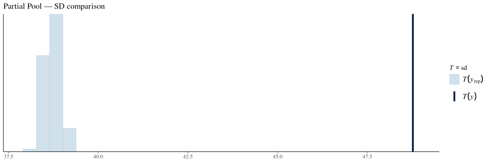

This project models the fatality rates of airplane crashes from 1975 to 2024. We use non-hierarchical and hierarchical Bayesian models with the airplane manufacturer as the grouping variable in the hierarchical model. Specifically, we compare two non-hierarchical models (complete pooling and no pooling) against one hierarchical model (partial pooling).
Motivation
Aviation has undergone massive developments since the first commercial flight in 1914. Airplane safety has always been the top priority for airlines; a single airplane crash will drive away customers to safer perceived airlines and, of course, cost lives. Although this priority of making airplanes as safe as possible has significantly reduced the number of crashes over the years, accidents still continue to occur.
Not all accidents are the same; survivability in crashes varies significantly. Understanding which factors influence survivability in crashes remains crucial for manufacturers and airlines seeking to minimize the loss of life. While accident prevention remains the most important priority, understanding the fatality patterns when accidents do occur is equally important in discussions of airplane safety.
Problem
When aviation accidents occur, the fatality rates vary significantly — from incidents where all passengers survive to catastrophic losses of everyone on board. This variation raises critical questions: Has the likelihood of surviving an airplane crash improved over time? Do certain airplane manufacturers demonstrate consistently higher crash survival rates than others? How much of the variation in crash fatality rates can be attributed to crash-specific details of individual accidents versus inherent airplane characteristics? These are questions that we hope to answer in our report.
Main Modeling Idea
We address these questions using hierarchical and non-hierarchical Bayesian modeling of fatality rates across aviation accidents from 1975 to 2024. We assume that aircraft from the same manufacturer share some of the same characteristics, such as similar design choices, engineering approaches, and safety systems. We still account for the overall similarity between all aircraft by including a global population-level distribution. We compare a partial pooling model against two baselines: complete pooling and no pooling.
Dataset
The dataset was obtained from a Kaggle repository created by Jonathan Ogwumike [1]. According to the repository description, the dataset has been used to teach students about Power BI and Python.
The dataset has two notable projects linked to it. Both are written in Python, and neither uses hierarchical models to analyze the fatality rate trend. Both include some exploratory data analysis, but since these are in Python we wrote our own analysis code in R.
Data Description
Crashes Over Time
# Figure 1: Number of crashes - datafig1 <- crashes %>%group_by(year) %>%summarise(n_crashes =n()) %>%ggplot(aes(x = year, y = n_crashes)) +geom_line() +labs(title ="Number of Crashes (Data)",x ="Year", y ="Number of Crashes")# Figure 2: Number of crashes - trendfig2 <- crashes %>%group_by(year) %>%summarise(n_crashes =n()) %>%ggplot(aes(x = year, y = n_crashes)) +geom_smooth(method ="loess", color ="red", se =TRUE) +labs(title ="Number of Crashes (Trend)",x ="Year", y ="Number of Crashes")fig1 + fig2
Temporal trends in aviation accidents
Fatalities Over Time
# Figure 3: Fatalities - data pointsfig3 <- crashes %>%ggplot(aes(x = year, y = fatalities)) +geom_point(alpha =0.3) +labs(title ="Fatalities (Data Points)",x ="Year", y ="Fatalities")# Figure 4: Fatalities - trendfig4 <- crashes %>%ggplot(aes(x = year, y = fatalities)) +geom_smooth(method ="loess", color ="red", se =TRUE) +labs(title ="Fatalities (Trend)",x ="Year", y ="Fatalities")fig3 + fig4
Trends in aviation accidents
Fatality Rate Over Time
# Compute yearly mean fatality raterate_ts <- crashes %>%group_by(year) %>%summarise(mean_rate =mean(fatality_rate, na.rm =TRUE),sd_rate =sd(fatality_rate, na.rm =TRUE),n =n(),se =ifelse(n >1, sd_rate /sqrt(n), NA_real_) )# Figure 5: Fatality rate - data pointsfig5 <- crashes %>%ggplot(aes(x = year, y = fatality_rate)) +geom_point(alpha =0.3) +labs(title ="Fatality Rate (Data Points)",x ="Year", y ="Fatality Rate")# Figure 6: Fatality rate - trendfig6 <-ggplot(rate_ts, aes(x = year, y = mean_rate)) +geom_smooth(method ="loess", color ="red", se =TRUE) +labs(title ="Fatality Rate (Trend)",x ="Year", y ="Mean Fatality Rate")fig5 + fig6
Mean fatality rate by year
To conduct a modern analysis on plane crash fatalities, we do not want to include observations from far back in the history. We need some reasonable cutoff point that keeps sufficient amount of data and allows us to model modern aircraft data. The fatalities trend shows a turning point around 1975, so it is reasonable to choose that as our observation cutoff year. This filtering brings our total observation count from 5013 down to 2188, so we are still left with plenty of data. We also only include observations from manufacturers with at least 10 crashes present in the data to stabilize the no pooling and partial pooling models. This brought our data down to 1766 observations.
1975 is a good cutoff date, because it resembles a period that shares lots of characteristics with modern flight travel. The 1950s and 1960s saw an upsurge in commercial flights, aircraft carriers, and international flying routes [2]. This upsurge was accompanied by great technological innovations. The most notable ones were the jet engine in the 1950s (safer and more reliable than the earlier piston engines) and the introduction of electronic instruments to the cockpit in the 1970s [3].
# Compute empirical fatality rates by manufacturer (≥10 crashes)empirical_rates <- crashes_filtered %>%group_by(aircraft_manufacturer) %>%summarise(mean_rate =mean(fatality_rate, na.rm =TRUE),sd_rate =sd(fatality_rate, na.rm =TRUE),n =n(),se =ifelse(n >1, sd_rate /sqrt(n), NA_real_),.groups ="drop" ) %>%mutate(lower_ci = mean_rate -1.96* se,upper_ci = mean_rate +1.96* se ) %>%arrange(mean_rate)# Plot empirical ratesempirical_rates %>%mutate(aircraft_manufacturer =fct_reorder(aircraft_manufacturer, mean_rate)) %>%ggplot(aes(x = mean_rate, y = aircraft_manufacturer)) +geom_point(size =3) +geom_errorbarh(aes(xmin = lower_ci, xmax = upper_ci), height =0.2) +geom_vline(xintercept =mean(crashes_filtered$fatality_rate), linetype ="dashed", color ="red" ) +labs(title ="Empirical Fatality Rates by Manufacturer",subtitle ="Data only (no pooling); dashed line = overall mean",x ="Fatality Rate", y ="Manufacturer" ) +theme_minimal()
Data Modeling
We model airplane crash fatality rates using three Bayesian models, each making different assumptions about information sharing across manufacturers. All models treat the number of fatalities \(y_i\) in crash \(i\) as binomially distributed given the number of people aboard \(n_i\) and a crash-specific fatality probability \(p_i\).
We use the logit link to constrain all predictions to \([0, 1]\):
When \(\eta_i\) is a linear predictor, solving for \(p_i\) gives:
\[p_i = \frac{\exp(\eta_i)}{1 + \exp(\eta_i)}\]
This allows linear predictors \(\eta_i \in (-\infty, \infty)\) to produce valid fatality probabilities.
Complete Pooling (Non-Hierarchical)
A complete pooling model assumes all observations are drawn from a single global distribution. In our plane crash setting this means every crash follows the same distribution regardless of manufacturer or any other grouping:
The strength of this model is its simplicity; its weakness is that it cannot capture manufacturer-level differences.
No Pooling (Non-Hierarchical)
A no pooling model gives each manufacturer its own completely independent distribution, with no information shared across groups. With \(m[i]\) denoting the manufacturer of crash \(i\):
This captures manufacturer-level differences but risks overfitting for manufacturers with few crashes, since they cannot borrow information from others.
Partial Pooling (Hierarchical)
A partial pooling model combines both approaches: each manufacturer has its own parameters, but those parameters are drawn from a shared global distribution. This regularizes estimates for manufacturers with little data by pulling them toward the global mean:
The manufacturer-level effects \(\alpha_m\) and \(\beta_m\) are drawn from a multivariate normal distribution, which solves the overfitting problem of no pooling by borrowing strength from the global distribution.
Prior Selection
Global Intercept
For the global intercept \(\alpha\), we use a weakly informative prior centered on the observed fatality rate of \(\approx 0.8\), transformed to the logit scale:
We use \(\alpha \sim \mathcal{N}(1.4,\, 1)\). The standard deviation of 1 keeps the prior weakly informative without over-constraining the estimate.
Global Year Coefficient
For the year coefficient \(\beta\), we use a more conservative prior. The fatality rate plot shows only a slight yearly trend, so we use \(\beta \sim \mathcal{N}(0,\, 0.5)\), yielding a 95% credible interval of approximately \([-1.0,\, 1.0]\).
Manufacturer-Level Priors (No Pooling)
For the manufacturer-specific intercepts and slopes in the no pooling model, we use \(\mathcal{N}(0,\, 1)\) — a safe, weakly informative choice that allows the data to dominate while keeping estimates in a reasonable range. brms requires a single prior class for all manufacturer-level coefficients, making it impractical to set manufacturer-specific priors.
Group-Level Standard Deviation (Partial Pooling)
For the group-level standard deviation \(\sigma\) in the hierarchical model, we observe that manufacturer fatality rates fall roughly between 0.6 and 0.95 across all manufacturers. Assuming this range covers \(\pm 2\sigma\) on the logit scale:
We use a half-normal prior \(\sigma \sim \mathcal{N}^+(0,\, 0.6)\), whose expected value is \(E[X] = 0.6\sqrt{2/\pi} \approx 0.479\).
Correlation Coefficient \(\rho\)
For the correlation \(\rho\) between manufacturer-level intercepts and slopes, we use \(\rho \sim \text{LKJ}(2)\). The LKJ distribution is designed for correlation matrices. With shape parameter \(\eta = 2 > 1\), the prior is skeptical of extreme correlations, producing a bell-shaped distribution centered at zero.
Complete pooling (non-hierarchical model)
Complete Pooling Model
With \(i\) representing individual crashes, \(n_i\) representing the number of people aboard, and \(p_i\) representing the fatality probability of a crash, the model is:
The complete pooling model is the simplest of our three models. The model assumes that each manufacturer shares the same intercept and linear coefficient. The weakness of this model is that it is not able to capture the potential differences between the manufacturers.
Model
complete_pool_formula <-bf( fatalities |trials(aboard) ~1+ year_scaled,family =binomial(link ="logit") )priors <-c(prior(normal(1.4, 1), class = Intercept),prior(normal(0, 0.5), class = b) )complete_pool_model <-brm(formula = complete_pool_formula,prior = priors,data = crashes_filtered,seed =42,refresh =0,cores =4,backend ="cmdstanr")
Running MCMC with 4 parallel chains...
Chain 1 finished in 1.1 seconds.
Chain 2 finished in 1.2 seconds.
Chain 3 finished in 1.2 seconds.
Chain 4 finished in 1.3 seconds.
All 4 chains finished successfully.
Mean chain execution time: 1.2 seconds.
Total execution time: 1.5 seconds.
Convergence Diagnostics
summary(complete_pool_model)
Family: binomial
Links: mu = logit
Formula: fatalities | trials(aboard) ~ 1 + year_scaled
Data: crashes_filtered (Number of observations: 1766)
Draws: 4 chains, each with iter = 2000; warmup = 1000; thin = 1;
total post-warmup draws = 4000
Regression Coefficients:
Estimate Est.Error l-95% CI u-95% CI Rhat Bulk_ESS Tail_ESS
Intercept 0.81 0.02 0.78 0.84 1.00 3641 2792
year_scaled -0.18 0.02 -0.21 -0.15 1.00 3901 2809
Draws were sampled using sampling(NUTS). For each parameter, Bulk_ESS
and Tail_ESS are effective sample size measures, and Rhat is the potential
scale reduction factor on split chains (at convergence, Rhat = 1).
The \(\hat{R}\) value for both the intercept term and the year coefficient is 1.00, indicating almost perfect chain overlapping. For both parameters, the bulk ESS values are over 3000 and the tail ESS values are over 2000. These values are great and definitely sufficient. The model had no divergences.
Posterior Predictive Check
pp_check(complete_pool_model, ndraws =100, type ="ecdf_overlay") +labs(title ="Complete Pool — ECDF overlay")

pp_check(complete_pool_model, ndraws =100, type ="stat", stat ="mean") +labs(title ="Complete Pool — mean comparison")

pp_check(complete_pool_model, ndraws =100, type ="stat", stat ="sd") +labs(title ="Complete Pool — SD comparison")

The complete pooling model ECDF follows the observed ECDF better at low fatalities than the no pooling model, but it still struggles in the 25–100 fatalities region.
The mean comparison plot shows that the observed mean is almost at the exact center of the model simulated fatalities distribution, meaning that this model also estimates the overall fatality rate correctly.
The standard deviation comparison plot shows that this model is also under-dispersed, but the effect is smaller than with the no pooling model.
We conduct a prior sensitivity analysis on this model by trying out 3 different prior settings and comparing the estimated parameters. The priors we are using are:
Model prior: Intercept prior: \(\mathcal{N}(1.4, 1)\), year coefficient prior: \(\mathcal{N}(0, 0.5)\) (same as the model).
Wide prior: Intercept prior: \(\mathcal{N}(1.4, 3)\), year coefficient prior: \(\mathcal{N}(0, 1.5)\) (3 times as wide for both).
Shifted prior: Intercept prior: \(\mathcal{N}(3.4, 1)\), year coefficient prior: \(\mathcal{N}(2, 0.5)\) (both priors shifted by 2 to the right).
Prior Distribution
\(\alpha\)
\(\beta\)
Model prior
0.81
−0.18
Wide prior
0.81
−0.18
Shifted prior
0.81
−0.18
The parameters are identical for all three priors. From these results it can be concluded that the model is very insensitive to the prior choice.
No pooling (non-hierarchical model)
No Pooling Model
This model treats every airplane manufacturer as their own independent entity, without sharing any information across any other possible grouping in the data. With \(i\) being the index of a plane crash and \(m[i]\) being the manufacturer \(m\) for crash \(i\):
This means that the model assumes that each crash has its own fatality rate based on the manufacturer and the year, and crashes from other manufacturers do not influence each other in any way. With this model, the estimates for manufacturers with only a few crashes in the data become unstable, because they can’t borrow information from other manufacturers.
The \(\hat{R}\) value for each of the parameters is 1.00, which means all coefficients converged properly. The bulk ESS values vary on the scale [4200, 5800] and the tail ESS values on the scale [2600, 3500]. These ESS values are far more than is needed for a reliable posterior estimation, so no problems there. The model had no divergences.
Posterior Predictive Check
pp_check(no_pool_model, ndraws =100, type ="ecdf_overlay") +labs(title ="No Pool — ECDF overlay")

pp_check(no_pool_model, ndraws =100, type ="stat", stat ="mean") +labs(title ="No Pool — mean comparison")

pp_check(no_pool_model, ndraws =100, type ="stat", stat ="sd") +labs(title ="No Pool — SD comparison")

The ECDF (empirical cumulative distribution function) shows that the model is slightly off when compared to the real data. We can see that at the start, the observed ECDF rises faster and higher than the model ECDF, indicating that the model predicts less crashes with close to 0 fatalities. However, in the 25–100 fatalities area, the observed ECDF lags behind the model ECDF meaning that the model estimates more crashes that lead to those fatality numbers.
The mean comparison plot shows that the true fatalities mean lies close to the center of the model simulated fatalities distribution, meaning that the model estimates the overall mean fatality rate correctly.
The standard deviation comparison plot shows that the true fatalities standard deviation is much larger than what the model estimates. In other words, the model predicts too little variability and is under-dispersed.
We conduct a prior sensitivity analysis on this model by trying out 3 different priors and comparing the estimated parameters of 4 manufacturers. The priors we are using are:
Model prior:\(\mathcal{N}(0, 1)\) (same as the model).
Wide prior:\(\mathcal{N}(0, 3)\) (a much wider distribution).
Shifted prior:\(\mathcal{N}(2, 1)\) (shifted to the right).
Prior Distribution
Manufacturer
\(\alpha\)
\(\beta\)
Model \(\mathcal{N}(0, 1)\)
Boeing
0.72
−0.34
Bell
1.94
0.82
Lockheed
0.16
1.00
Mil
4.34
−1.67
Wide \(\mathcal{N}(0, 3)\)
Boeing
0.72
−0.34
Bell
2.20
0.63
Lockheed
0.16
1.00
Mil
5.16
−2.30
Shifted \(\mathcal{N}(2, 1)\)
Boeing
0.72
−0.34
Bell
1.96
0.96
Lockheed
0.16
1.00
Mil
4.40
−1.70
We can see that the parameters do not vary much. For manufacturers with many observations in the data (Boeing: 248 observations, Lockheed: 106 observations), the parameters are identical for every prior. For manufacturers with a fewer number of observations (Mil: 41 observations, Bell: 33 observations), the parameter values show more variance:
These variances are tolerable and still show the same trend, just in different strengths. The results show that the model is stable under reasonable prior changes, and the main conclusions drawn from the model do not depend on the chosen prior.
Partial pooling (hierarchical model)
Partial Pooling Model
For the partially pooled model, we are predicting both a population level intercept and coefficient (\(\alpha_0\) and \(\beta_0\)) and manufacturer level intercepts and coefficients (\(\alpha_{m[i]}\) and \(\beta_{m[i]}\)). The partial pooling model is a combination of the techniques used in the no pooling model and the complete pooling model. The no pooling method assumed that each manufacturer had their own intercept and coefficient and the complete pooling model assumed that all manufacturers have the same intercept and coefficient. The partial pooling assumes that both of these conditions hold.
Running MCMC with 4 parallel chains...
Chain 4 finished in 71.4 seconds.
Chain 2 finished in 73.1 seconds.
Chain 3 finished in 80.4 seconds.
Chain 1 finished in 91.2 seconds.
All 4 chains finished successfully.
Mean chain execution time: 79.0 seconds.
Total execution time: 91.3 seconds.
Convergence Diagnostics
summary(partial_pool_model)
Family: binomial
Links: mu = logit
Formula: fatalities | trials(aboard) ~ 1 + year_scaled + (1 + year_scaled | aircraft_manufacturer)
Data: crashes_filtered (Number of observations: 1766)
Draws: 4 chains, each with iter = 2000; warmup = 1000; thin = 1;
total post-warmup draws = 4000
Multilevel Hyperparameters:
~aircraft_manufacturer (Number of levels: 40)
Estimate Est.Error l-95% CI u-95% CI Rhat Bulk_ESS
sd(Intercept) 1.22 0.14 0.97 1.51 1.00 1189
sd(year_scaled) 0.92 0.12 0.71 1.15 1.01 824
cor(Intercept,year_scaled) -0.75 0.08 -0.87 -0.56 1.00 1013
Tail_ESS
sd(Intercept) 2115
sd(year_scaled) 1529
cor(Intercept,year_scaled) 1649
Regression Coefficients:
Estimate Est.Error l-95% CI u-95% CI Rhat Bulk_ESS Tail_ESS
Intercept 1.27 0.20 0.88 1.66 1.00 441 971
year_scaled 0.02 0.15 -0.28 0.32 1.00 458 1138
Draws were sampled using sample(hmc). For each parameter, Bulk_ESS
and Tail_ESS are effective sample size measures, and Rhat is the potential
scale reduction factor on split chains (at convergence, Rhat = 1).
mcmc_plot(partial_pool_model, type ="trace",variable =c("b_Intercept", "b_year_scaled","sd_aircraft_manufacturer__Intercept","sd_aircraft_manufacturer__year_scaled"))
The partial pooling model MCMC converged well with all \(\hat{R}\) values smaller or equal to 1.01:
Parameter
\(\hat{R}\)
Bulk ESS
Tail ESS
\(\sigma_\alpha\) (SD Intercept)
1.00
875
1707
\(\sigma_\beta\) (SD year_scaled)
1.01
779
1184
\(\rho\) (Correlation)
1.00
961
1537
\(\alpha_0\) (Intercept)
1.01
511
959
\(\beta_0\) (year_scaled)
1.00
516
951
Even though our process converged, the low ESS values are troublesome. Both bulk ESS and tail ESS values should be over 1000 in an ideal case. The models ESS values are relatively close to 1000 for the standard deviation and correlation parameters, but are far away from ideal for the intercept \(\alpha_0\) and the coefficient \(\beta_0\). We tried doubling the warmup and iteration counts to 1000 and 4000 respectively, but the ESS numbers stay the same. This means that especially for \(\alpha_0\) and \(\beta_0\), we don’t have enough independent samples for truly reliable posterior estimates.
Posterior Predictive Check
pp_check(partial_pool_model, ndraws =100, type ="ecdf_overlay") +labs(title ="Partial Pool — ECDF overlay")
pp_check(partial_pool_model, ndraws =100, type ="stat", stat ="mean") +labs(title ="Partial Pool — mean comparison")

pp_check(partial_pool_model, ndraws =100, type ="stat", stat ="sd") +labs(title ="Partial Pool — SD comparison")

The ECDF of the partially pooled model matches the original observations fairly well. Same for the observed mean. The standard deviation comparison has the same problem as the other two models: it is under-dispersed.
Prior Sensitivity Analysis
For the partial pooling model, we analyse how changing our prior assumptions on how similar manufacturers are affects the posterior predictions. We do this by using three different priors for our standard deviations \(\sigma\):
The means don’t show noticeable effects from different prior choices. The standard deviation is affected by changing the prior distributions for it, but this is expected — the standard deviation priors should only affect the standard deviation posteriors. Thus we can conclude that our model is robust.
Model comparison
To compare the three models, we use LOO-CV (Leave-One-Out Cross-Validation), which has the basic idea of: 1) remove an observation \(i\), 2) train the model, 3) predict observation \(i\). Then measure how well the model performed and compare the models. We measure the ELPD (Expected Log Predictive Density) and SE (Standard Error) for all models and then compare them with each other. We use the partial pooling model as the baseline.
A good rule of thumb is that if \(|\text{elpd\_diff}| < 1 \times \text{se\_diff}\), the models are close to equal, and if \(|\text{elpd\_diff}| > 2 \times \text{se\_diff}\), there is a clear difference between the models. A higher ELPD value indicates better performance.
The no pooling model seems to perform slightly worse than the partial pooling model, but the ratio of 1.24 is still close to 1 and could just be due to random noise, so no clear conclusions can be drawn from this.
The complete pooling model, however, can be reported to perform significantly worse than the other two models. The reason for this is most likely that the model fails to capture the manufacturer level differences, and therefore predicts incorrectly for most crashes.
Discussion
Although the partial pooling model performs best according to LOO cross-validation, none of the three models succeeds in accurately modeling the structure of the real data, as revealed by the posterior predictive check analysis.
The two non-hierarchical models have their obvious limitations, but the interesting question is: why does the hierarchical model fail? On paper, it should perform well, because it uses population level information as well as captures the manufacturer level differences. Evidently, it still has its limitations.
The problem with all of our models seemed to be that they were under-dispersed, meaning that they underestimated the variance. The reason for this mainly comes from our use of binomial likelihood for predicting the fatalities. The variance formula of binomial likelihood for an observation \(i\) is
\[\operatorname{Var}(Y_i) = n_i p_i (1 - p_i)\]
This formula is fixed once \(n_i\) and \(p_i\) are known and is bounded by \(n_i / 4\) (when \(p_i = 0.5\)). The true variances in the observed data were shown to be much larger than the models’, because the binomial variance simply cannot reach the true variability values. As a potential improvement for the models, a different likelihood function that could combat this under-dispersion problem should be used.
Another reason that our models fail is much simpler. Airplane crashes simply cannot be modeled accurately, especially with so little information. There are countless factors that can affect the fatality rate of a crash and there is a lot of randomness included. One could try to add more predictors and see if it yields better results. But even with more predictors included, the results would still most likely be inaccurate, but perhaps better than what we reached.
Conclusions
In our report, we modeled fatality rate trends with hierarchical and non-hierarchical models. We used three types of models: complete pooling, no pooling and partial pooling models. From these models the partial pooling model performed the best with the no pooling model coming in a close second. We used LOO-CV to compare our models.
One of our research questions was whether there are differences in the fatality rates of manufacturers. The fact that the partial pooling and no pooling models performed well would suggest that fatalities are modeled better assuming that each manufacturer has their own parameters and distributions.
According to our prior sensitivity analysis, the models were quite unaffected by changes in priors. This means that our models are able to model the fatality rates well without the priors having too big of an effect on the model.
In our posterior predictive analysis, we noticed that our models weren’t capturing the variance of the original observations. The variance of our models was too small. This was due to the fixed maximum variance of the binomial model being too small to correctly model the real crash variance.
Self Reflection
The project was a great summary of the key concepts taught in the Bayesian Data Analysis course. During the course we acquired basic skills in Bayesian data analysis and during the project we got to use them in practice and deepen our understanding about the methods.
In this report we discussed things like hierarchical and non-hierarchical models, how to choose priors and test the effects of these priors on the predictions, how to run MCMC simulations and how to compare and evaluate the models these simulations suggest.
Running MCMC simulations is computationally expensive and the project showed the importance of access to cloud computing resources. Running the MCMC code could take over 30 minutes on old hardware while it took 5–10 minutes to run on modern cloud hardware in JupyterHub.